2.3 Amazon Web Services (AWS)¶
Autora del material original: Ángela Bañuls Serrano
Ciclo: CFGS Administración de Sistemas Informáticos en Red
En este apartado
- Introducción
- Servicios principales de AWS
- Infraestructura global
- Servicios de red: VPC, subredes, tablas de rutas e Internet Gateway
- Computación: instancias EC2
- Elastic Block Store (EBS)
- Balanceo de carga y Auto Scaling
Ejercicios: 1. VPC y subredes · 2. Tablas de rutas · 3. Internet Gateway · 4. Instancia EC2 · 5. Servidor web · 6. Load Balancer · 7. Auto Scaling
Introducción¶
AWS es la plataforma de computación en la nube líder a nivel mundial. Ofrece una enorme cantidad de servicios, desde almacenamiento y bases de datos hasta aprendizaje automático e inteligencia artificial.
Los servicios se agrupan en estas categorías principales:
| Categoría | Servicios |
|---|---|
| Computación | EC2, Lambda, ECS (Elastic Container Service), EKS (Elastic Kubernetes Service) |
| Almacenamiento | S3, EBS, EFS |
| Redes y entrega de contenido | VPC, CloudFront, Route 53 (DNS) |
| Bases de datos | RDS (relacionales), DynamoDB (no relacionales), Redshift |
| Herramientas para desarrolladores | CodeCommit, CodePipeline, CodeBuild |
| Herramientas de administración | CloudWatch, CloudTrail, Config |
| Otros servicios | Machine Learning, IoT, Lex |
Servicios principales de AWS¶
AWS se organiza en capas. En este apartado nos centramos en los servicios básicos (marcados en rojo): computación, redes y almacenamiento, que se apoyan sobre la infraestructura de regiones, zonas de disponibilidad y localizaciones periféricas.
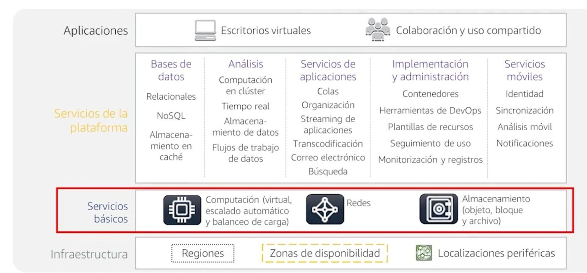
Los servicios con los que trabajaremos son:
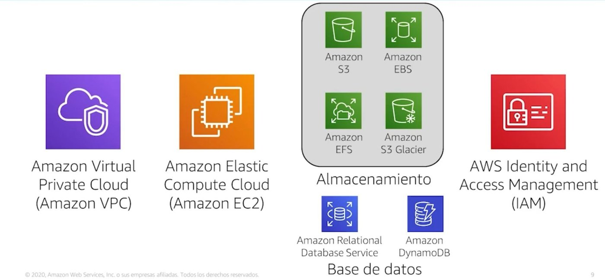
| Servicio | Para qué sirve |
|---|---|
| Amazon VPC | Red privada virtual en la nube |
| Amazon EC2 | Máquinas virtuales (instancias) |
| S3 / EBS / EFS / S3 Glacier | Almacenamiento de objetos, de bloques (discos), de archivos y de archivado |
| RDS / DynamoDB | Bases de datos relacionales y NoSQL |
| IAM | Gestión de identidades y permisos de acceso |
Infraestructura global de AWS¶
La infraestructura global de AWS ofrece un entorno en la nube flexible, escalable y seguro, con una red global de alto rendimiento.
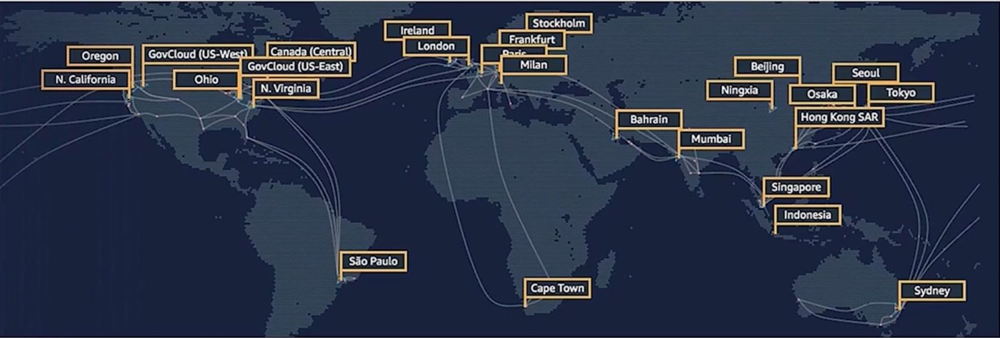
Regiones¶
Una región es un área geográfica (por ejemplo, Irlanda, Frankfurt o Norte de Virginia).
- La replicación de datos entre regiones no es automática: la tenemos que gestionar nosotros.
- La comunicación entre regiones usa la red troncal de AWS.
- Cada región ofrece redundancia y conectividad completas.
- Una región está formada por dos o más zonas de disponibilidad.
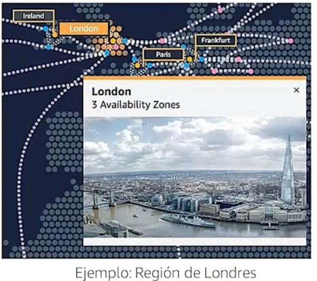
Zonas de disponibilidad (AZ)¶
Cada zona de disponibilidad es una partición aislada de la infraestructura de AWS dentro de una región.
- Hay más de 100 zonas de disponibilidad en todo el mundo.
- Están formadas por uno o varios centros de datos independientes.
- Están diseñadas para aislar errores: si falla una, las demás siguen funcionando.
- Se interconectan entre sí con una red de alta velocidad.
- Tú eliges en qué zonas despliegas tus recursos.
- Para lograr resiliencia, AWS recomienda replicar los datos entre zonas.
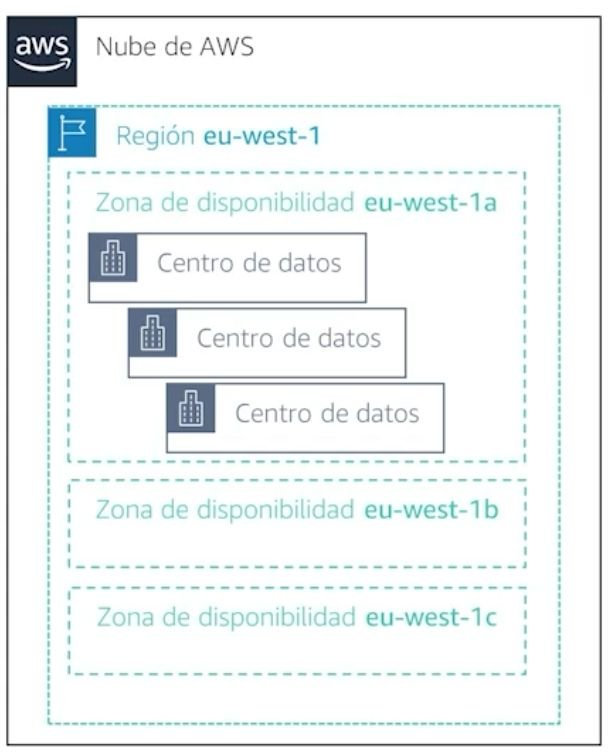
Nomenclatura
Las regiones tienen códigos como eu-west-1 (Irlanda) o us-east-1 (Norte de Virginia), y sus zonas añaden una letra: eu-west-1a, eu-west-1b…
Servicios de red en AWS¶
Los principales servicios de red son Amazon VPC, Route 53 (DNS), AWS Direct Connect (conexión dedicada con nuestro centro de datos) y AWS VPN.
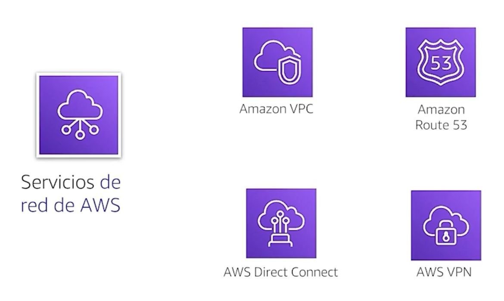
VPC (Virtual Private Cloud)¶
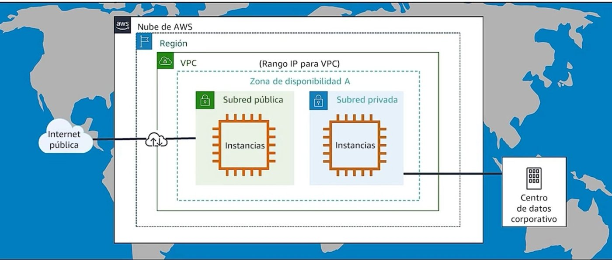
- Es un segmento de red completamente aislado.
- Usa direccionamiento privado.
- Permite segmentar la arquitectura en redes distintas y gestionar qué ve cada una.
- Puede tener acceso directo a Internet o no.
- Permite comunicar recursos de AWS sin usar IP públicas.
- Es de alcance regional.
Subredes (subnets)¶
- Son pequeños segmentos de red dentro de la VPC.
- Podemos crear todas las que necesitemos mientras queden bloques CIDR libres en la VPC.
- Pueden estar comunicadas entre ellas o no.
- Son de alcance zonal: cada subred está en una sola zona de disponibilidad.
- No se pueden modificar una vez creadas.
Subred pública vs privada
Una subred es pública si su tabla de rutas envía el tráfico de Internet (0.0.0.0/0) a un Internet Gateway. Si no, es privada.
🧪 Ejercicio 1: Crear una VPC y 4 subredes¶
1. Crear la VPC en VPC → Sus VPC → Crear VPC:
| Campo | Valor |
|---|---|
| Recursos que se van a crear | Solo la VPC |
| Etiqueta de nombre | iso |
| Bloque CIDR IPv4 | Entrada manual → 10.0.0.0/16 |
| Bloque CIDR IPv6 | Sin bloque de CIDR IPv6 |
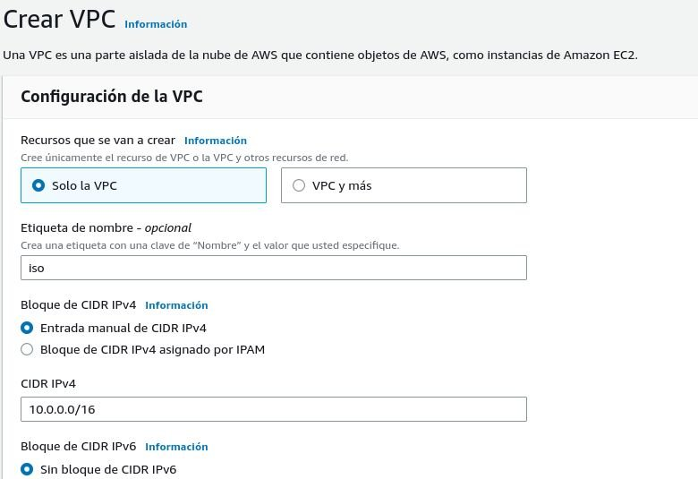
Este es el esquema que vamos a montar: 2 subredes públicas y 2 privadas, repartidas en dos zonas de disponibilidad.
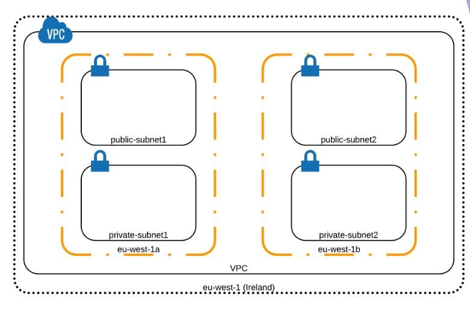
2. Crear las 4 subredes en la VPC iso:
| Nombre | CIDR | Zona de disponibilidad |
|---|---|---|
public1 |
10.0.1.0/24 |
us-east-1a |
public2 |
10.0.2.0/24 |
us-east-1b |
private1 |
10.0.3.0/24 |
us-east-1a |
private2 |
10.0.4.0/24 |
us-east-1b |
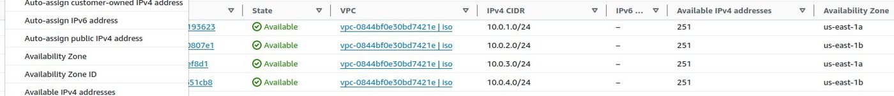
¿Por qué 251 direcciones y no 256?
En cada subred, AWS reserva 5 direcciones: la de red, la del router de la VPC, la del DNS, una reservada para uso futuro y la de broadcast.
Región del laboratorio
Los diagramas usan eu-west-1 (Irlanda), pero las capturas del laboratorio están hechas en Norte de Virginia (us-east-1). Usa las zonas de la región en la que trabajes.
3. Asignar IP pública automáticamente en las subredes públicas: selecciona cada subred pública → Acciones → Editar la configuración de la subred → marca Habilitar la asignación automática de la dirección IPv4 pública.
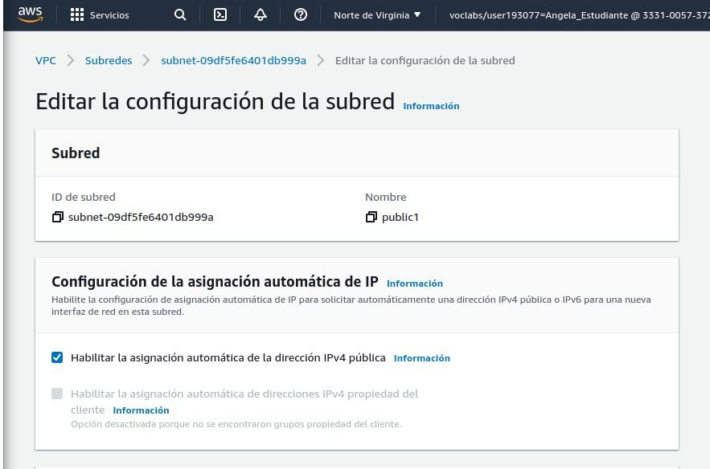
Tablas de enrutamiento¶
- Se usan para enrutar el tráfico dentro de las VPC.
- Al crear una VPC se crea una tabla por defecto (la principal).
- Se pueden crear varias y asociar cada subred a la que queramos.
- Lo recomendable es tener al menos una tabla para las subredes públicas y otra para las privadas.
🧪 Ejercicio 2: Crear las tablas de enrutamiento¶
1. Crear dos tablas en VPC → Tablas de enrutamiento → Crear tabla de enrutamiento: route-public y route-private, ambas en la VPC iso.
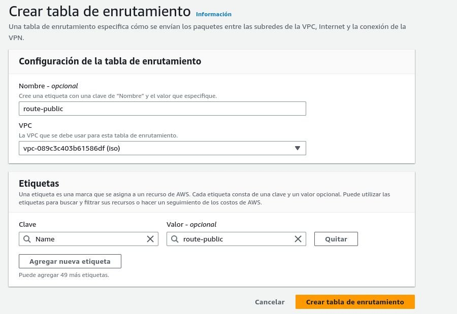
Al final tendremos tres tablas: la principal (creada automáticamente con la VPC) y las dos nuestras.
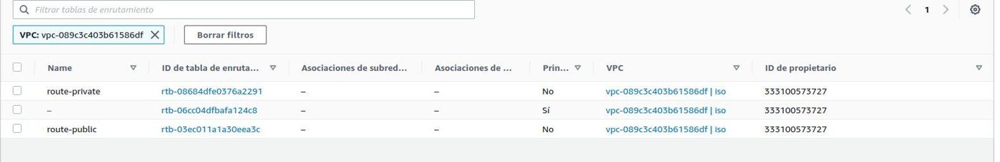
2. Asociar las subredes: selecciona la tabla → pestaña Asociaciones de subredes → Editar asociaciones de subredes.
route-public→public1ypublic2route-private→private1yprivate2
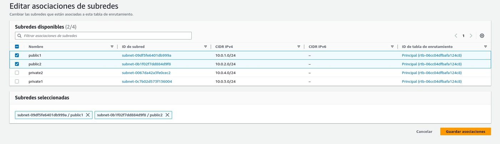
Aclaración
Por defecto, todas las instancias de una VPC ya se comunican entre sí con sus IP privadas, estén en subredes públicas o privadas (gracias a la ruta local). Para salir a Internet hace falta configurar algo más: el Internet Gateway.
Internet Gateway (IGW)¶
- Es el punto de conexión de la VPC con Internet.
- Se referencia en la tabla de rutas.
- Solo pueden llegar a Internet los recursos que tengan IP pública.
- Lo gestiona y escala AWS; no requiere configuración.
- Solo puede haber un IGW conectado a cada VPC.
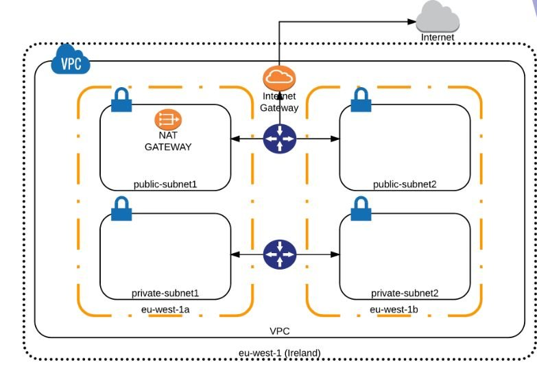
¿Y el NAT Gateway del diagrama?
Las instancias de las subredes privadas no tienen IP pública. Si necesitan salir a Internet (por ejemplo, para actualizarse) se usa un NAT Gateway colocado en una subred pública.
🧪 Ejercicio 3: Crear y conectar el Internet Gateway¶
1. Crear el IGW en VPC → Gateways de Internet → Crear gateway de Internet, con el nombre iso-gateway.
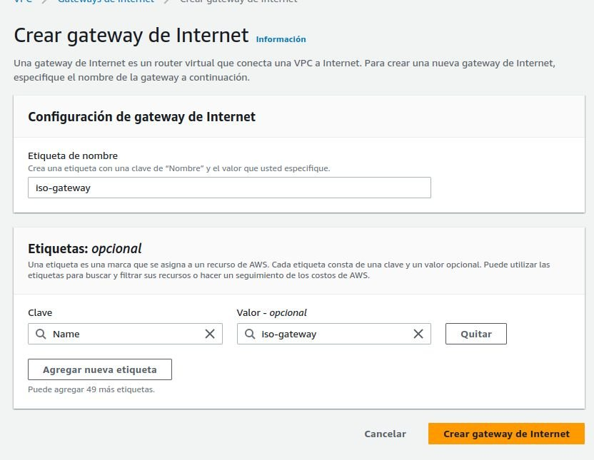
2. Conectarlo a la VPC: selecciona iso-gateway → Acciones → Conectar a la VPC → elige iso. Su estado pasará de Detached a Attached.
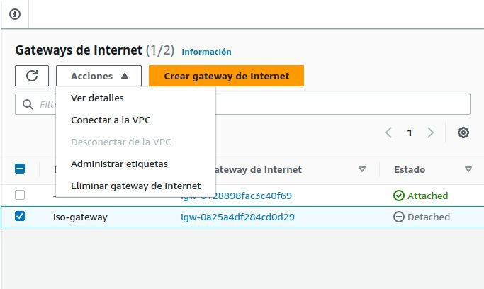
3. Añadir la ruta por defecto en la tabla pública: selecciona route-public → pestaña Rutas → Editar rutas → Agregar ruta.
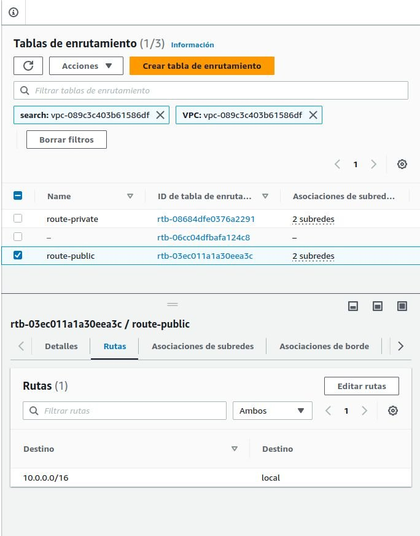
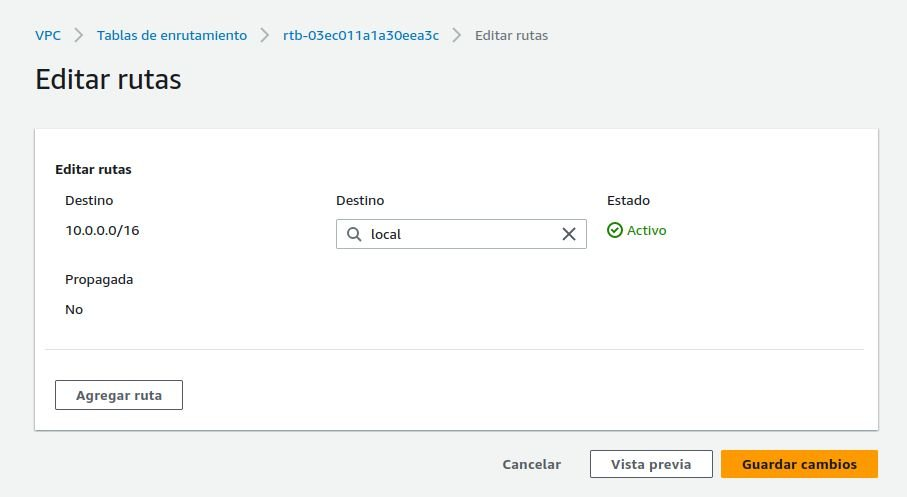
| Destino | Objetivo |
|---|---|
10.0.0.0/16 |
local (ya existe) |
0.0.0.0/0 |
Puerta de enlace de Internet → iso-gateway |
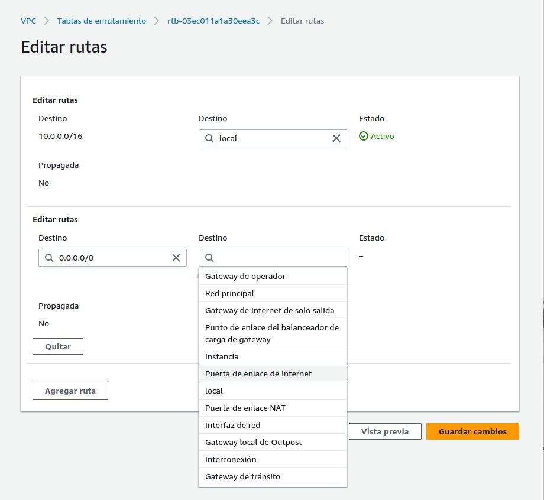
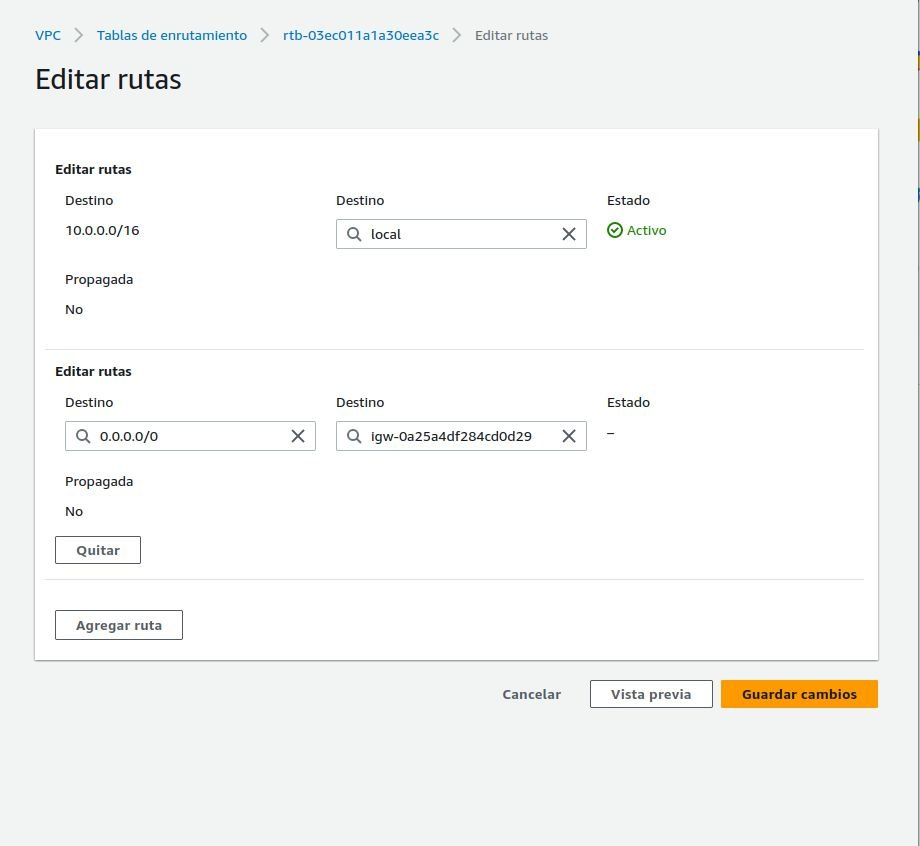
Pulsa Guardar cambios. Ahora las subredes public1 y public2 ya son realmente públicas.
Computación en AWS: instancias EC2¶
Tipos y clases de instancias¶
- Las máquinas virtuales de AWS se llaman instancias EC2.
- Se pagan por tiempo encendidas.
- Hay distintas gamas y tamaños.
- Siempre parten de una AMI (Amazon Machine Image), la plantilla con el sistema operativo.
- Para lanzar una instancia necesitamos como mínimo: una AMI, una VPC, un Security Group, un disco EBS y una clave de acceso SSH o RDP.
Modos de uso (compra)¶
| Modo | Características |
|---|---|
| On-Demand | Se paga por tiempo encendida. Se puede apagar en cualquier momento. |
| Reserved | Se reservan por 1 o 3 años. Suelen ser entre un 50 y un 70 % más baratas que las On-Demand. |
| Spot | Las más baratas: aprovechan capacidad sobrante de AWS. A cambio, AWS puede apagarlas en cualquier momento. |
Instancias Spot
Antiguamente se "pujaba" por las instancias Spot. Hoy se paga el precio Spot vigente, con descuentos de hasta el 90 % respecto a On-Demand.
Familias de instancias¶
- Las familias se diferencian en la proporción de CPU, RAM, GPU, red y almacenamiento.
- El tipo se elige al crear la instancia (
t2,m5,c5…). - Se puede cambiar después, pero requiere detener y arrancar la instancia.
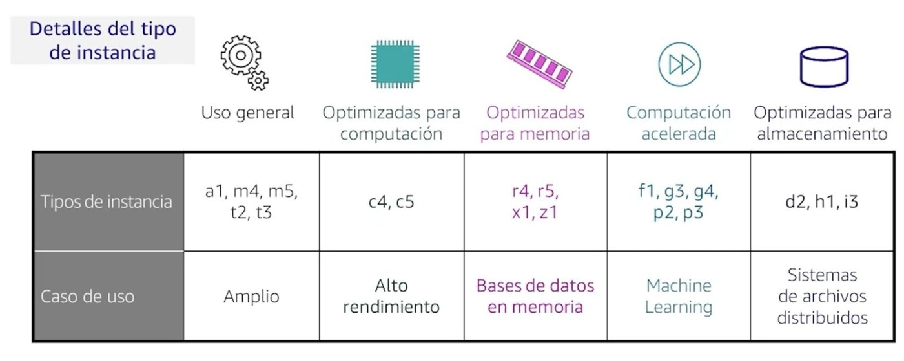
| Familia | Ejemplos | Caso de uso |
|---|---|---|
| Uso general | a1, m4, m5, t2, t3 | Amplio (servidores web, desarrollo…) |
| Optimizadas para computación | c4, c5 | Alto rendimiento de CPU |
| Optimizadas para memoria | r4, r5, x1, z1 | Bases de datos en memoria |
| Computación acelerada | f1, g3, g4, p2, p3 | Machine Learning (GPU) |
| Optimizadas para almacenamiento | d2, h1, i3 | Sistemas de archivos distribuidos |
Cómo leer el nombre
En t2.micro, la letra es la familia (t = uso general con ráfagas), el número es la generación y lo que va tras el punto es el tamaño (nano, micro, small, medium, large…).
Security Groups¶
Los grupos de seguridad son un cortafuegos virtual que controla el tráfico que entra y sale de las instancias EC2.
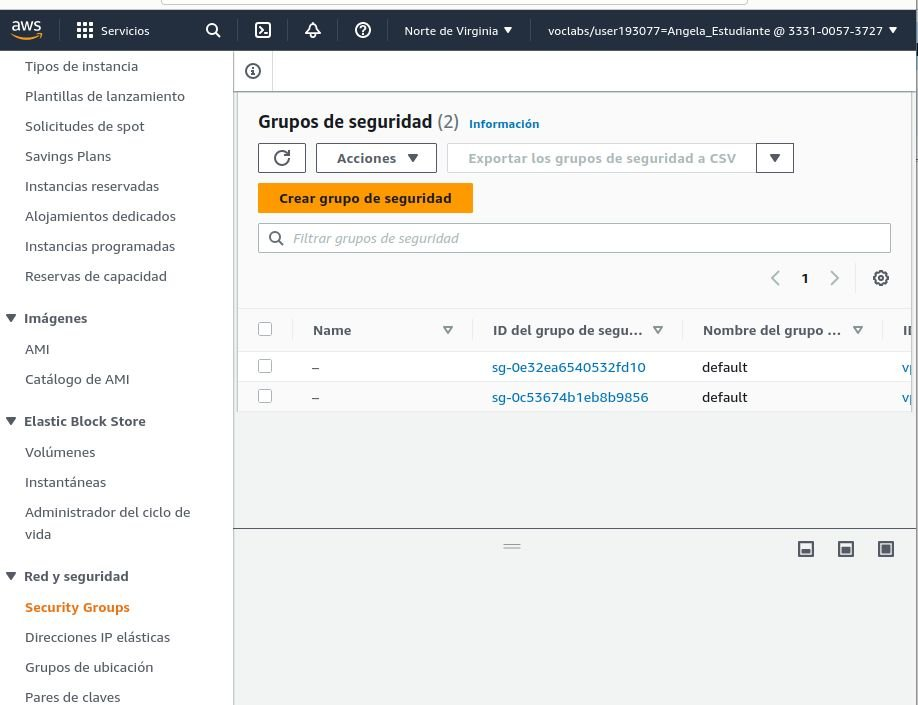
Para nuestro servidor web crearemos el grupo web-server en la VPC iso con estas reglas de entrada:
| Tipo | Protocolo | Puerto | Origen |
|---|---|---|---|
| HTTP | TCP | 80 | 0.0.0.0/0 (cualquiera) |
| HTTPS | TCP | 443 | 0.0.0.0/0 (cualquiera) |
| SSH | TCP | 22 | Mi IP |
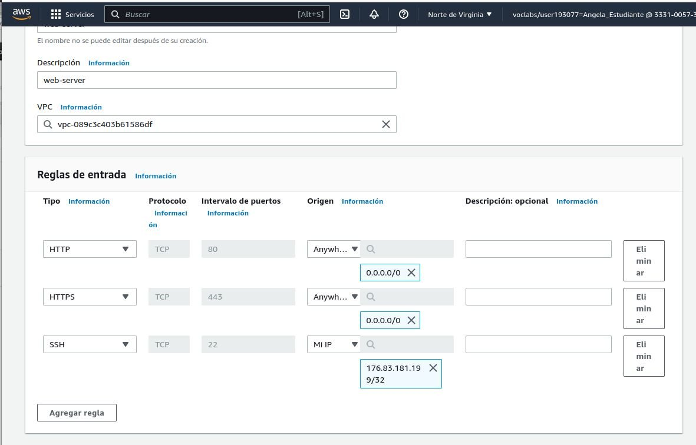
Seguridad
Limita siempre SSH a tu IP ("Mi IP"). Abrir el puerto 22 a todo Internet es una mala práctica.
Direcciones IP elásticas¶
Una IP elástica es una IP pública estática que se puede asociar a una instancia EC2 y desasociarla fácilmente en cualquier momento.
¿Por qué usarla?
La IP pública normal de una instancia cambia cada vez que la detienes y arrancas. La IP elástica es fija, así que es la que usaremos para un servidor.
Se crea en EC2 → Direcciones IP elásticas → Asignar la dirección IP elástica:
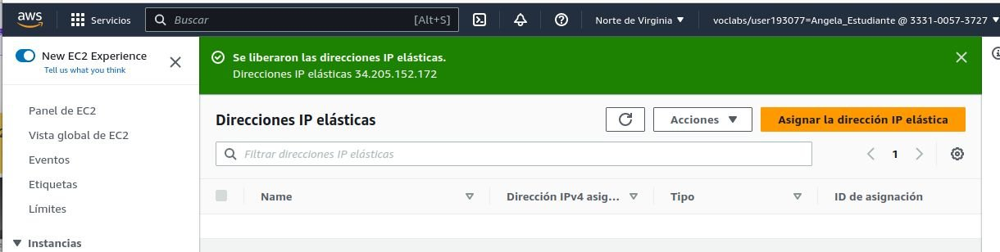
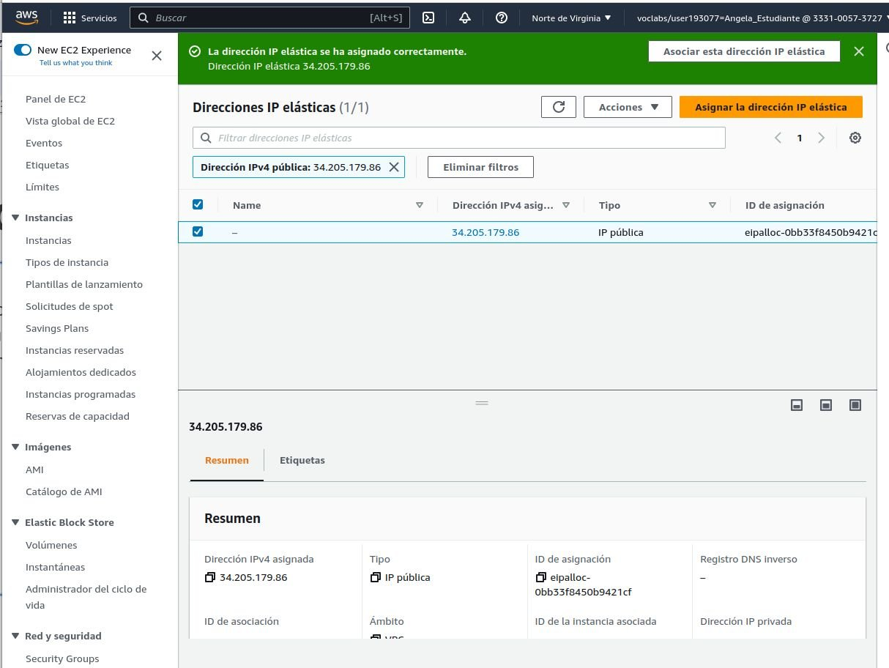
Coste
Las IP elásticas tienen coste. Cuando termines la práctica, libérala (Acciones → Liberar direcciones IP elásticas).
🧪 Ejercicio 4: Crear una instancia EC2¶
1. Ve a EC2 → Instancias → Lanzar instancias.
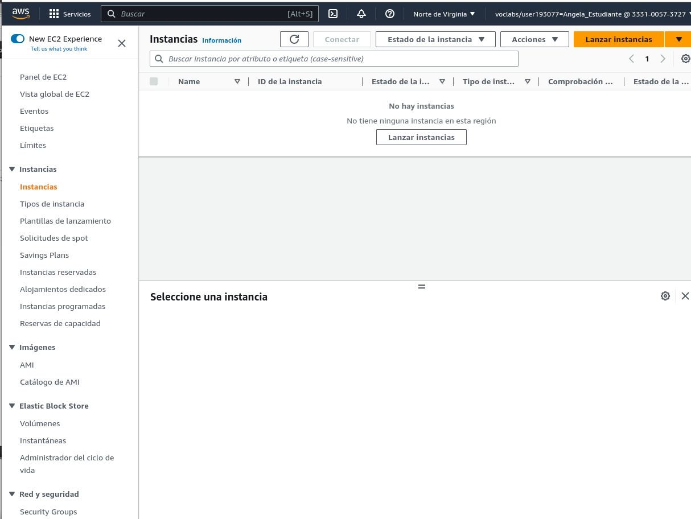
2. Configura la instancia:
| Opción | Valor |
|---|---|
| Nombre | web-server |
| AMI | Amazon Linux 2023 (apta para la capa gratuita) |
| Tipo de instancia | t2.micro |
| Par de claves | Crear uno nuevo: mi_clave, tipo RSA, formato .pem |
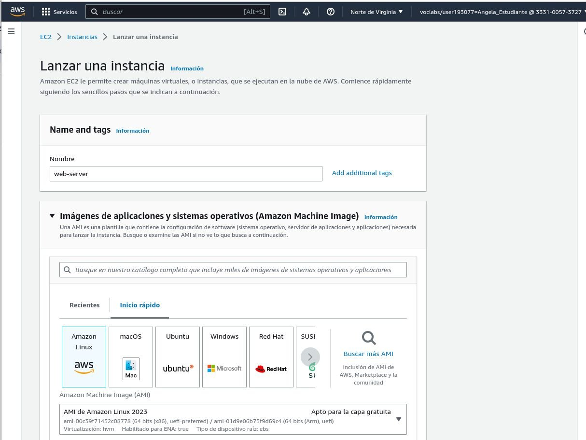
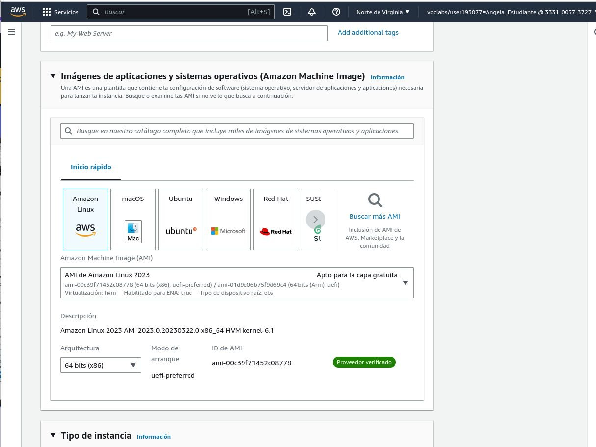
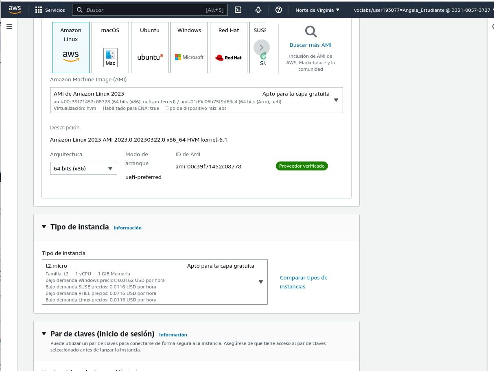
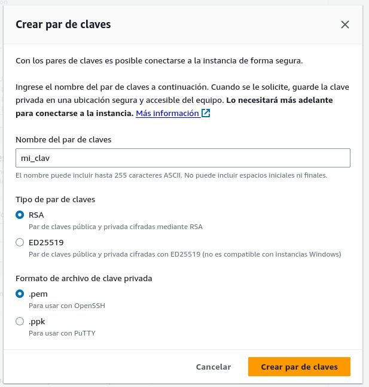
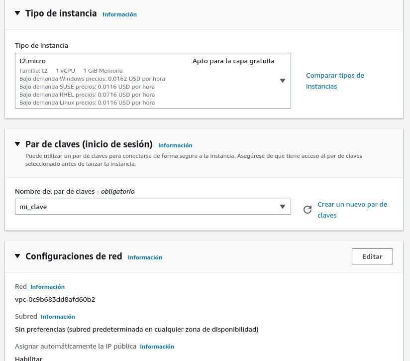
Guarda la clave
El archivo mi_clave.pem se descarga una sola vez. Guárdalo bien: sin él no podrás conectarte a la instancia.
3. En Configuraciones de red → Editar:
| Opción | Valor |
|---|---|
| VPC | iso |
| Subred | public1 |
| Asignar automáticamente la IP pública | Habilitar |
| Firewall | Seleccionar grupo existente → web-server |
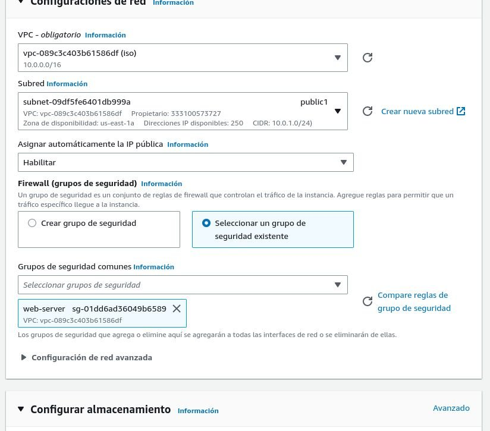
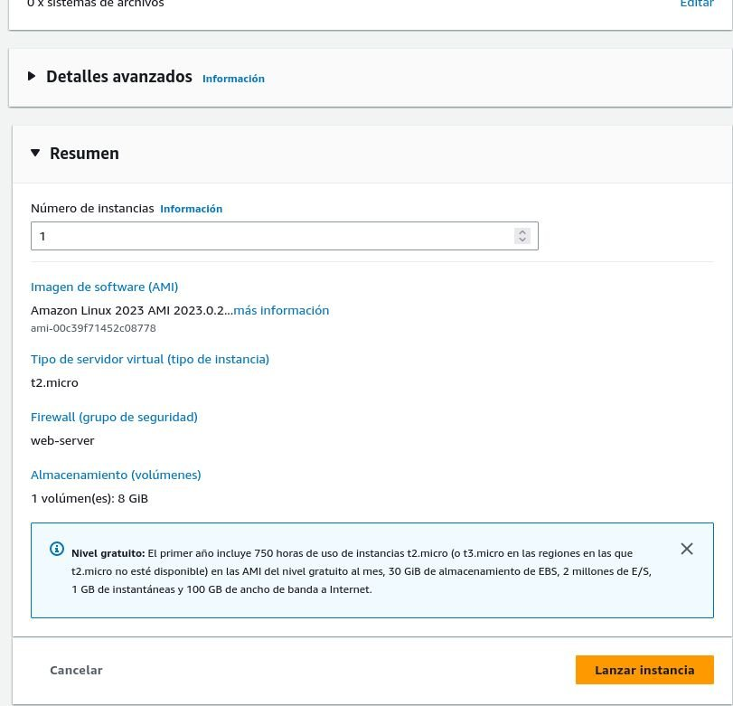
4. Revisa el resumen y pulsa Lanzar instancia.
5. Asociar la IP elástica: en Direcciones IP elásticas, selecciona la IP → Asociar la dirección IP elástica → tipo de recurso Instancia → elige tu instancia → Asociar.
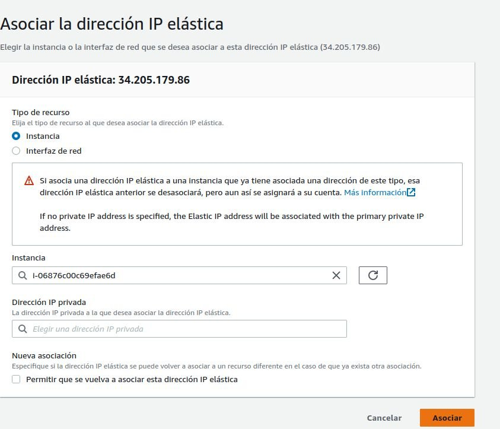
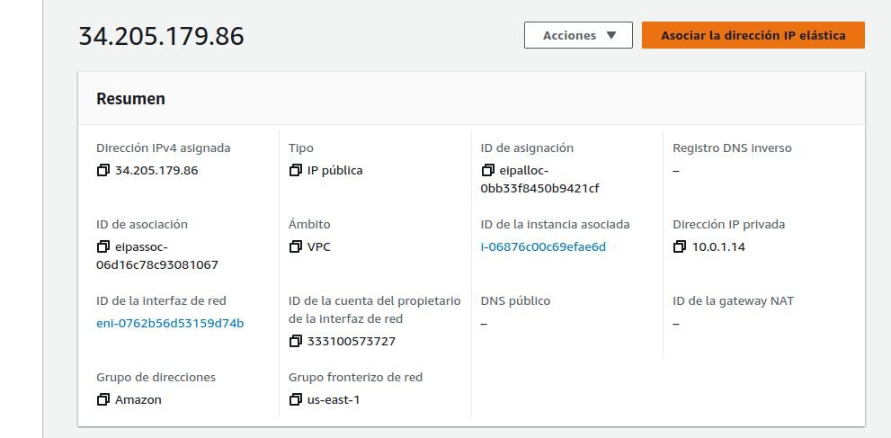
6. Conectarse por SSH desde tu equipo, en la carpeta donde está la clave:
chmod 400 mi_clave.pem
ssh -i mi_clave.pem ec2-user@IP_ELASTICA
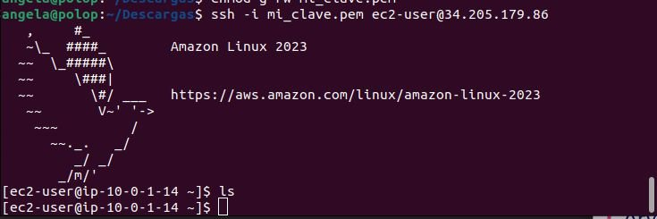
Desde Windows
En PowerShell también funciona ssh -i mi_clave.pem ec2-user@IP_ELASTICA. El usuario de Amazon Linux es ec2-user; en Ubuntu sería ubuntu.
🧪 Ejercicio 5: Instalar un servidor web¶
Dentro de la instancia, instalamos y arrancamos Apache (httpd):
sudo dnf update
sudo dnf install httpd
sudo systemctl start httpd
sudo systemctl enable httpd
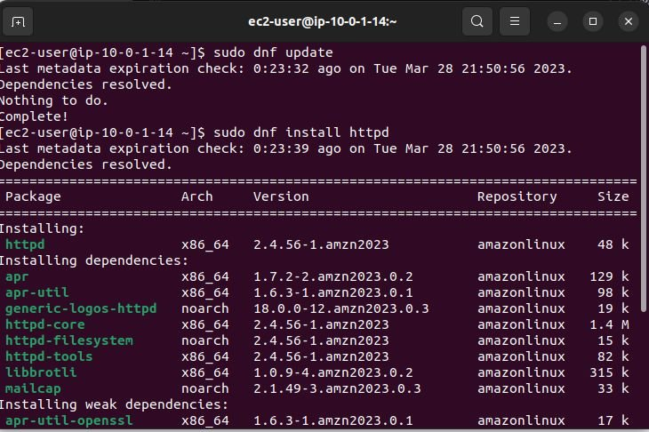
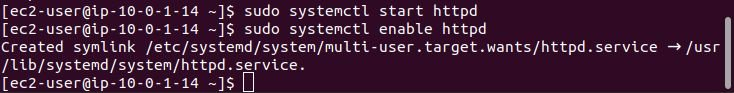
Abre en el navegador http://IP_ELASTICA y deberías ver:
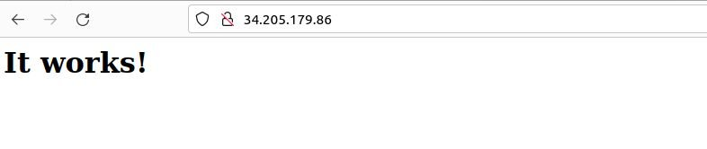
Usa http, no https
Todavía no hemos configurado un certificado, así que accede con http://. Si el navegador fuerza https://, no cargará.
Elastic Block Store (EBS)¶
Los volúmenes EBS son los discos de AWS.
- Al crear una instancia EC2 se crea un volumen para el sistema (8 GiB por defecto).
- Podemos crear discos de datos después y asociarlos a la instancia.
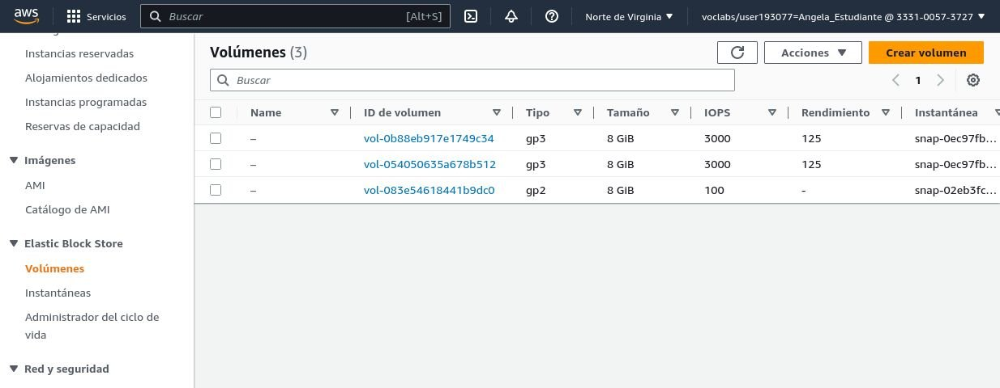
Para asociar un volumen: créalo en EC2 → Volúmenes → Crear volumen, selecciónalo y ve a Acciones → Asociar volumen.
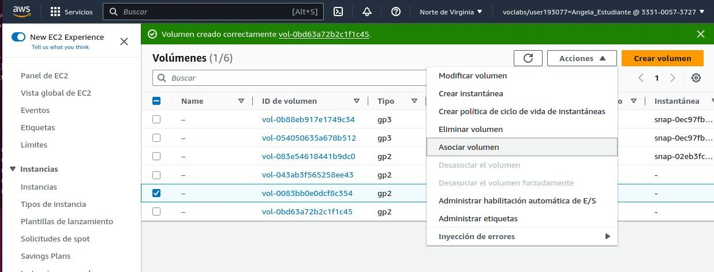
Misma zona de disponibilidad
Un volumen EBS solo se puede asociar a instancias de su misma zona de disponibilidad. Créalo en la misma AZ que la instancia (por ejemplo, us-east-1a).
Balanceo de carga y Auto Scaling¶
Elastic Load Balancer (ELB)¶
Servicio gestionado que reparte el tráfico entre varias instancias EC2, aumentando la disponibilidad y la resiliencia de las aplicaciones. Soporta HTTP y HTTPS (capa 7) y TCP (capa 4).
| Tipo | Capa | Uso |
|---|---|---|
| Application Load Balancer (ALB) | 7 | Aplicaciones web (el que usaremos) |
| Network Load Balancer (NLB) | 4 | Alta velocidad y baja latencia |
| Gateway Load Balancer (GWLB) | 3 | Appliances virtuales (firewalls, etc.) |
Auto Scaling Group (ASG)¶
- Grupo de instancias EC2 gestionado automáticamente.
- Escala según políticas (uso de CPU, tráfico…).
- Escalado horizontal: más carga → más instancias.
- Escalado hacia abajo: menos carga → menos instancias → ahorro de costes.
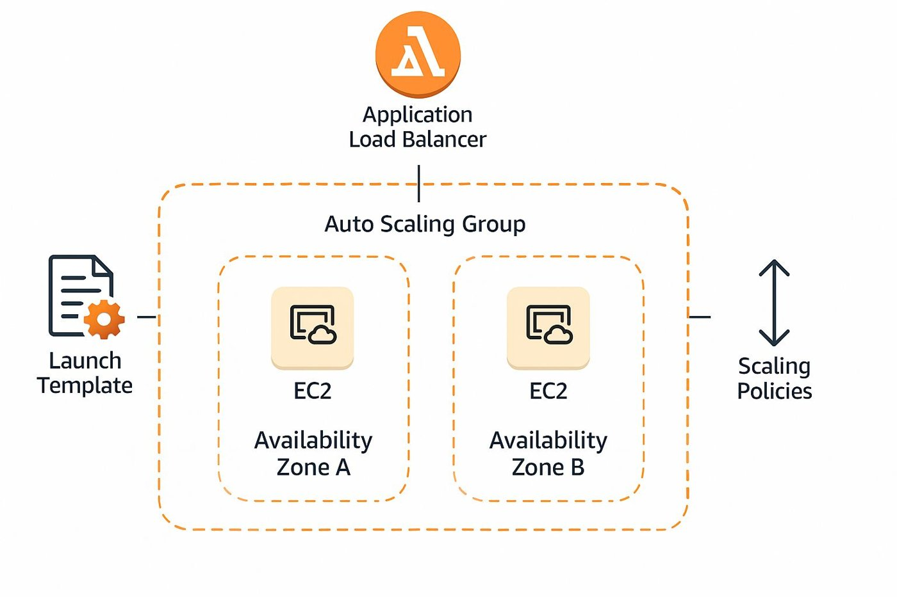
🧪 Ejercicio 6: Configurar un Application Load Balancer¶
Objetivo: balancear el tráfico entre 2 instancias EC2 con servidor web en zonas de disponibilidad distintas.
Paso 1: Crear una imagen (AMI) de tu instancia¶
- Ve a EC2 → Instancias y selecciona la instancia con el servidor web.
- Acciones → Imagen y plantillas → Crear imagen.
- Nombre:
web-server-image. - Deja las opciones por defecto y pulsa Crear imagen.
Paso 2: Crear una plantilla de lanzamiento¶
En EC2 → Plantillas de lanzamiento → Crear plantilla de lanzamiento:
| Opción | Valor |
|---|---|
| Nombre | lt-web-server |
| AMI | Mis AMI → web-server-image |
| Tipo de instancia | t2.micro |
| Par de claves | mi_clave |
| Red | Tu VPC, pero sin elegir subred (se elige en el Auto Scaling) |
| Grupo de seguridad | web-server (permite HTTP) |
Paso 3: Crear el Application Load Balancer¶
En EC2 → Balanceadores de carga → Crear balanceador de carga → Balanceador de carga de aplicaciones:
| Opción | Valor |
|---|---|
| Nombre | web-alb |
| Esquema | Expuesto a Internet |
| Tipo de dirección IP | IPv4 |
| VPC | iso |
| Zonas y subredes | Las dos zonas con public1 y public2 |
| Grupo de seguridad | web-server |
| Agente de escucha | HTTP : 80 (por defecto) |
Crear el grupo de destino (desde el enlace del agente de escucha):
| Opción | Valor |
|---|---|
| Tipo | Instancias |
| Nombre | tg-web-autoscaling |
| Protocolo / puerto | HTTP / 80 |
| VPC | iso |
| Instancias | Ninguna por ahora (las añadirá el Auto Scaling) |
Vuelve al balanceador, selecciona el grupo de destino tg-web-autoscaling y pulsa Crear balanceador de carga.
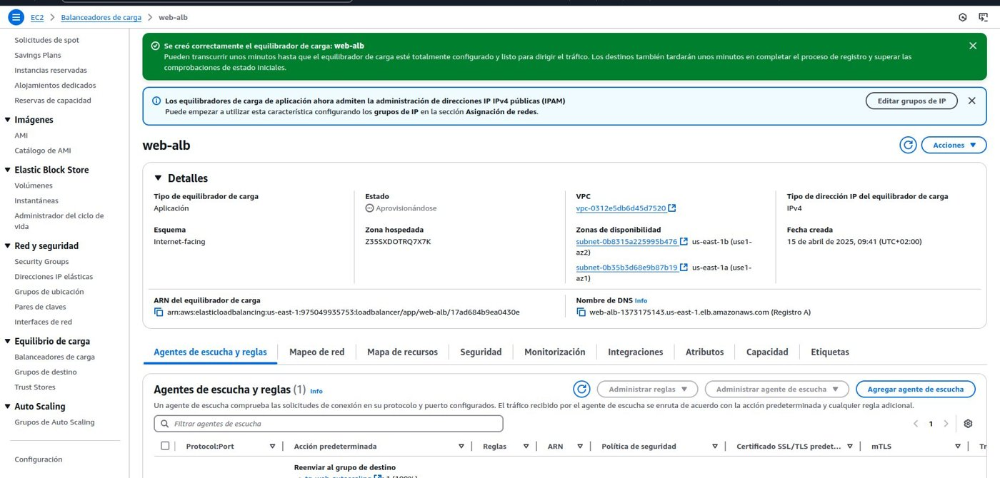
🧪 Ejercicio 7: Crear un Auto Scaling Group¶
Paso 1: Crear el grupo¶
En EC2 → Grupos de Auto Scaling → Crear grupo de Auto Scaling:
- Nombre:
asg-web-balancer - Plantilla de lanzamiento:
lt-web-server
Paso 2: Red¶
- VPC:
iso - Subredes:
public1ypublic2
Paso 3: Asociar al balanceador¶
- Elige Asociar a un balanceador de carga existente.
- Grupo de destino:
tg-web-autoscaling. - Opciones de integración de VPC Lattice: déjalo en No hay ningún servicio de VPC Lattice; no hace falta para este ejercicio.
Paso 4: Tamaño del grupo y escalado¶
| Opción | Valor | Significado |
|---|---|---|
| Capacidad deseada | 2 | 2 instancias activas de inicio, una en cada AZ |
| Capacidad mínima | 1 | Nunca bajará de 1 instancia |
| Capacidad máxima | 4 | Nunca pasará de 4 instancias |
| Escalado automático | Política de seguimiento de destino | |
| Métrica | Utilización promedio de la CPU | |
| Valor objetivo | 60 % | Añade o quita instancias para mantenerse cerca de ese valor |
Con la política de seguimiento de destino, AWS crea automáticamente el escalado hacia arriba y hacia abajo, sin escribir condiciones a mano.
Pulsa Siguiente, deja el resto por defecto y Crear grupo de Auto Scaling.
✅ Verificaciones finales¶
El Auto Scaling Group debe tener 2 instancias en la pestaña Administración de instancias, con ciclo de vida InService y estado Healthy.
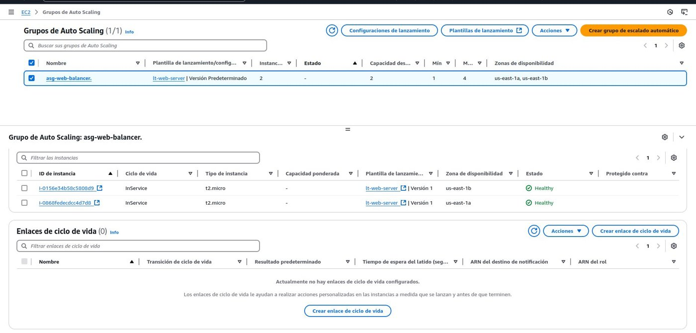
El Load Balancer debe mostrar 2 instancias registradas y healthy en el grupo de destino tg-web-autoscaling.
Prueba final
Copia el Nombre de DNS del balanceador (algo como web-alb-123456.us-east-1.elb.amazonaws.com) y ábrelo en el navegador con http://. Deberías ver tu servidor web, servido por cualquiera de las dos instancias.
Al terminar
Para no gastar créditos, elimina en este orden: el grupo de Auto Scaling, el balanceador de carga, el grupo de destino, las instancias y la IP elástica.
📌 Resumen¶
| Término | Definición |
|---|---|
| Región | Área geográfica con varias zonas de disponibilidad. |
| Zona de disponibilidad (AZ) | Centros de datos aislados dentro de una región. |
| VPC | Red privada virtual y aislada, de alcance regional. |
| Subred | Segmento de la VPC, de alcance zonal. Pública si tiene ruta al IGW. |
| Tabla de enrutamiento | Define hacia dónde va el tráfico de las subredes asociadas. |
| Internet Gateway | Conecta la VPC con Internet. Uno por VPC. |
| EC2 | Máquinas virtuales (instancias) de AWS. |
| AMI | Imagen/plantilla con el sistema operativo para crear instancias. |
| Security Group | Cortafuegos virtual de las instancias. |
| IP elástica | IP pública fija que se puede mover entre instancias. |
| EBS | Discos (volúmenes) de las instancias. Van ligados a una AZ. |
| ELB / ALB | Balanceador de carga que reparte el tráfico entre instancias. |
| Auto Scaling Group | Grupo que añade o quita instancias automáticamente según la carga. |